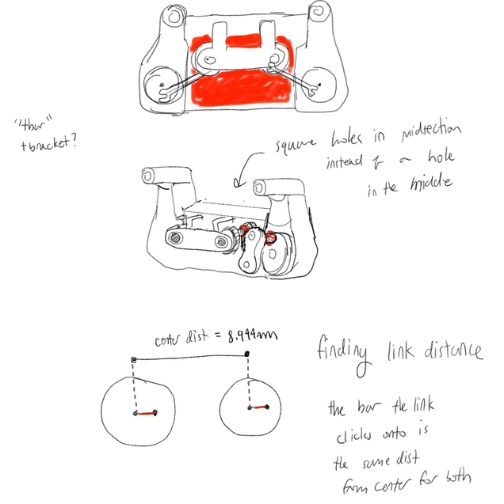
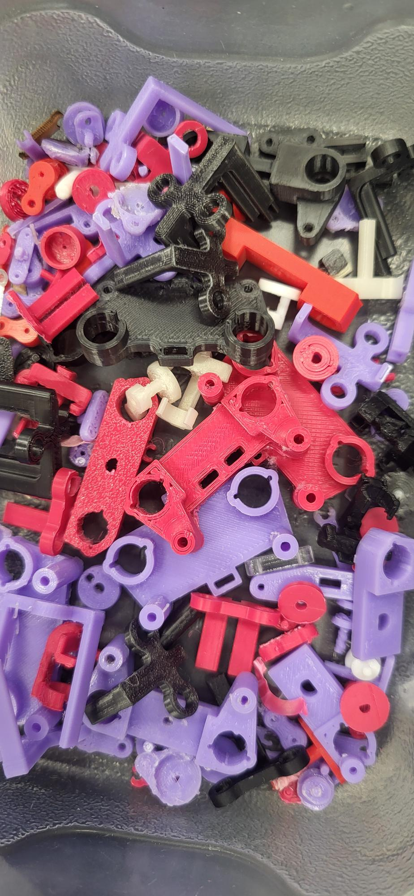
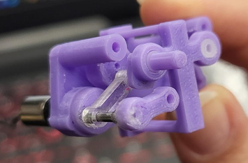
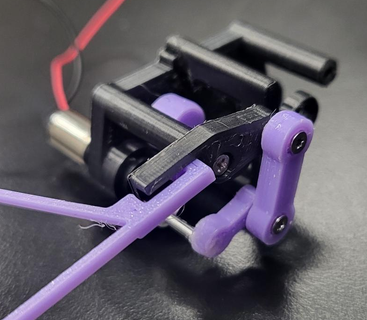

Flapping Wing Micro Air Vehicle
Overview
The Flapping-Wing Micro Air Vehicle (FWMAV) project was a continuation of a previous student's master's thesis, focusing on the development of a mechanism to transmit rotational motion from the wing-driving motors to magnetic rotary encoders positioned at the center of the robot's body. The primary objective was to investigate the feasibility of a mechanical linkage system as an alternative to an existing friction-based transmission mechanism. As the project is open-source, an additional objective was to develop a low-cost, reproducible design using accessible fabrication methods, primarily 3D printing and laser cutting.
The proposed proposed linkage design uses a single link, connecting 2 points that are radially equidistant from their respective axis of rotation. Theoretically, this configuration would allow for the rotational motion of the motor to be transmitted to a magnet positioned on top of the encoder. Compared with the alternative friction-based mechanism, which used two silicone cylinders in rolling contact, the acrylic linkage arm would be relatively lighter. The project aimed todetermine whether the linkage mechanism could effectively transmit the motion within the spatial and fabrication constraints.

An Early Conceptual Sketch and Design
This sketch shows an early concept for the mechanism. An idea for the linkage used a snap-fit connection, similar to a LEGO hand, to allow for easier assembly and disassembly. The link was fabricated in different ways, such as being laser cut fro acrylic and wood, and 3D printed.
A support structure in the center of the body holds two bearings made from delrin tubing. These bearings allows the structure holding the magnet, to spin on top of the encoders. The red regions in the sketch indicate the space occupied by the encoders. Another structure attatches to the motors, allowing for the link to be connected from the magnet structure to the motor strucutre. In this design, a circular 3D-printed piece is attached to the motor, with a rod positioned at a fixed radial distance from the motor's axis of rotation. The 3D-printed component holding the magnet also includes a rod located the same radial distance from its own center of rotation. A linkage arm then connects these two rods, with the intention of transmitting the motor's rotational motion to the magnet so that it could rotate above the encoder.
Graveyard of 3D Printed Components
text...talk about what failed, the lego-esk linkage arms, the 3D printed pin of the magnet enclosure, parts snapping, like the motor attatchment. the support structure constantly snapping,


One Iteration of Mechanism
text.

Second Iteration of Linkage Mechanism
text.
Mechanism Demonstration
text.
Concluding Statement
i gave up on the project lol Realization that this mechanism may not be feasible.